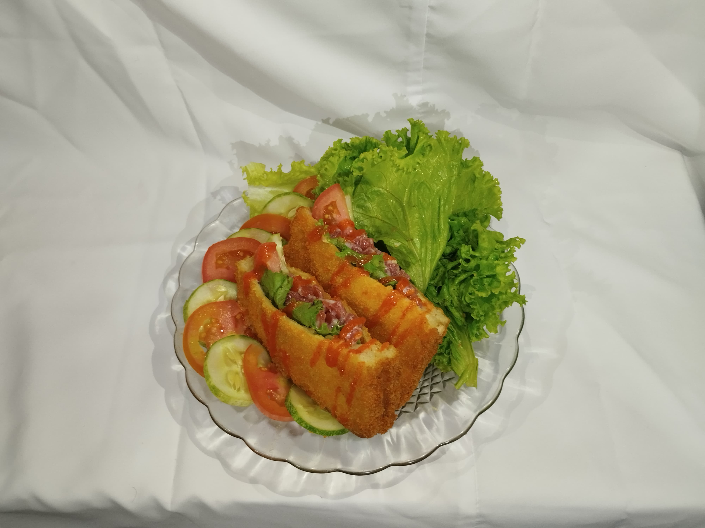

Savory Fried
menu utama kita yaitu fried savory dimana menu ini adalah roti goreng yang kami buat dengan cita rasa yang khas. Dengan saus mayones yang sudah kami bumbui dengan resep rahasia kami untuk menggugah selera anda dan di tambah dengan smoked beef dan serta sayur tomat, selada dan timun. Kalian bisa mendapatkan fried savory di Harga Rp10.000/pcs hanya satu fried savory kalian bisa membelinya Kembali. Di penjualan PO 1 kami menjual 23pcs dan PO 2 kami menjual 27pcs dalam satu bulan ini kami menjual 50pcs
Resep Pembuatan
Bahan Dan Alat
- Roti
- Telur
- Tepung panir
- Smoked beef
- Mayonaise
- Saus bbq
- Saus bolognese
- Selada
- Timun
- Tomat
- wajan
- Pisau
- Talenan
- Minyak
- Spatula
- Packaging Fried Savory
- Saus
- Siapkan bahan dan alatnya seperti roti tawar 2 lembar, tepung panir secukuupnya, minyak secukupnya, lalu telur 1 biji sebagai perekatnya, smoked beef secukupnya untuk isian fried savory dan mayones yang sudah kita campur dengan saos bolognes dan barbeque, sayur seperti timun, tomat. Siapkan juga alat-alat masak seperti : pisau, talenan, wajan, spatula dan wadah untuk fried savory.
- Untuk langkah selanjutnya, tuang minyak secukupnya di wajan dan panaskan dengan api sedang agar matang merata, selagi menunggu minyak panas, pecahkan telur dan taruh telur tersebut ke dalam piring dan kocok telur tersebut. Lalu ambil 2 lembar roti tawar, lumuri roti tawar dengan telur tersebut hingga merata, lalu taruh roti di wadah yang sudah kita sediakan tepung panir. Setelah dipastikan sudah dilumuri tepung panir, masukkan ke minyak yang sudah kita panaskan tadi lalu kita goreng roti tersebut. Tunggu hingga kuning keemasan lalu angkat dan tiriskan. Setelah itu potong smoked beef berbentuk dadu. Campurkan mayonaise, saus barbeque dan saus bolognese, aduk sampai merata. Setelah itu masukkan daging yang sudah dipotong ke dalam campuran mayonaise tadi dan aduk sampai merata.
- Potong roti yang sudah ditiriskan tadi menjadi 2 bagian menggunakan pisau dan talenan yang sudah disiapkan tadi. Setelah itu potong timun dan tomat sesuai selera, lalu masukkan smoked beef yang sudah tercampur mayones tadi. Jangan lupa masukkan irisan timun dan tomat yang sudah kita iris tadi, masukkan ke wadah yang sudah kita siapkan. Fried savory siap dihidangkan.